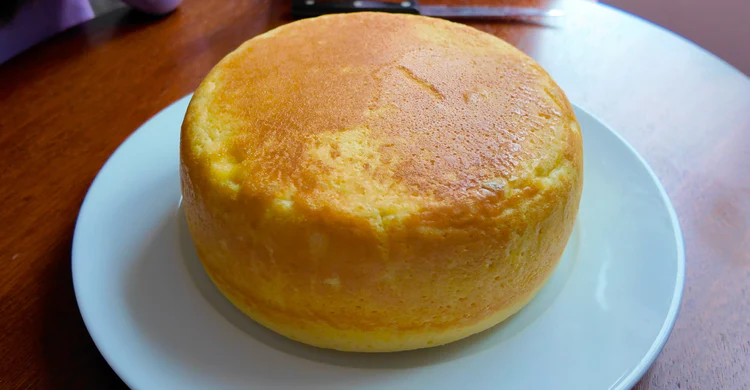

Sponge Cake from Rice Cooker

Description
I’ve tasted a few rice cooker cake recipes over the years, and while some were good, none were perfect, they often turned out dry or collapsed after cooling.
So, I started testing my own version until I finally found the sweet spot.
The real secret isn’t in the ingredients: it’s in the timing. Around 30–33 minutes of cooking is just right. Don’t overbake! Once it’s done,
turn off the rice cooker and let it rest for 15–20 minutes with the lid closed. That gentle steam makes the cake incredibly moist, soft, and bouncy.
This is my low-sugar, low-oil version, yet it’s still unbelievably light, tender, and so jiggly! If you prefer a sweeter flavor, simply increase the sugar to 50 g.
Ingredients
- 6 large eggs, separated
- 190 ml milk
- 55 g corn oil
- 150 g all-purpose flour
- 35 g sugar (or up to 50 g for a sweeter version)
Instructions
- Separate the eggs. Place egg whites in one bowl and yolks in another.
- Make the yolk batter: Add milk, corn oil, and flour to the yolk bowl. Mix until smooth and lump-free.
- Make the meringue: Beat the egg whites, adding sugar in three batches. Continue beating until soft peaks form and the meringue has a little resistance.
- Preheat the rice cooker. Lightly brush the inner pot with corn oil.
- Combine: Add a small scoop of meringue into the yolk mixture and stir gently. Pour the yolk mixture into the remaining meringue, folding slowly from bottom to top until just combined.
- Pour and settle: Pour the batter into the rice cooker pot, tap lightly to remove bubbles.
- Cook: Select the Cook Rice setting and cook for 30 minutes.
- Rest: When time’s up, turn off the heat but keep the lid closed for 15–20 minutes before opening.
Home